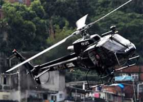

Com exclusividade, o Caso de Polícia solta as primeiras imagens do novo helicóptero que será utilizado no suporte de missões policiais em área de risco no Rio de Janeiro. Trata-se do Huey II, aeronave produzida pela empresa Bell Helicopter da Textron Inc.
O novo helicóptero da Polícia Civil vai ser utilizado juntamente com os antigos Esquilo, que freqüentemente vemos em fotos nos jornais por aí. O diferencial é que, enquanto o Esquilo é uma aeronave própria para taxi aéreo e adaptada para funções policiais, o Huey tem características de aeronave militar, tendo sido utilizado inclusive durante a Guerra do Vietnã. Assim, ganhará equipamentos compatíveis com o uso, e uma blindagem mais adequada que das aeronaves atualmente em uso.O Huey II, em verdade, é um projeto melhorado do antigo helicóptero UH-1H que tem servido ao Exército Americano por muitos anos, estabelecendo os padrões de desempenho para todos os demais helicópteros. Desde a primeira unidade produzida, mais de 10 mil já foram construídos, sendo que atualmente cerca de 5 mil continuam voando em 45 países ao redor do mundo. O diferencial do Huey II para seu antecessor é, principalmente, quanto à melhoria de performance, devido ao emprego do motor 1.800 'horsepower' T53-L-703, o mesmo do AH-1S Cobra.
Vale lembrar que a PCERJ não utiliza suas aeronaves apenas para apoio aéreo durante operações policiais, mas também no resgate de pessoas desaparecidas em nossas florestas, salvamentos na praia, combate à incêndios, resgate de alpinistas acidentados, e muitas outras atividades de extrema importância, auxiliando muitas vezes o Corpo de Bombeiros.

Helicóptero Águia da CORE, modelo Esquilo
Até então, a Polícia Civil dispunha do helicóptero Esquilo, que, apesar de ser muito útil nas operações policiais, foi desenvolvido para serviços de táxi aéreo.
Depois falaremos mais do assunto, e vamos mostrar melhor também o novo veículo blindado, já divulgado no Diário de um PM. Fiquem aí com as primeiras imagens do Huey II da Polícia do Rio, apelidado também de Sapão:
{kind=link}
{kind=link}
{kind=link}